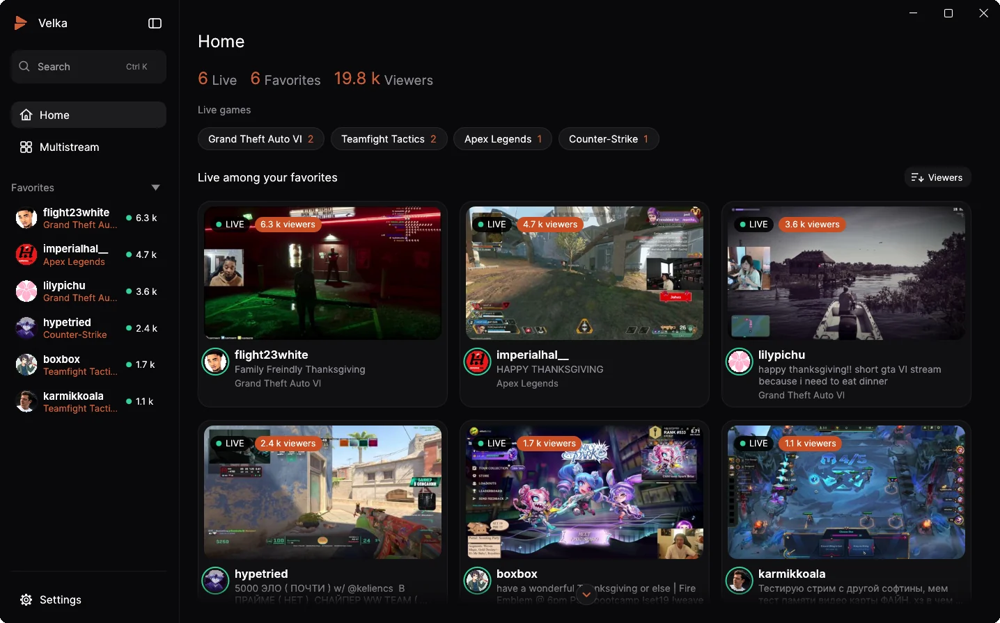
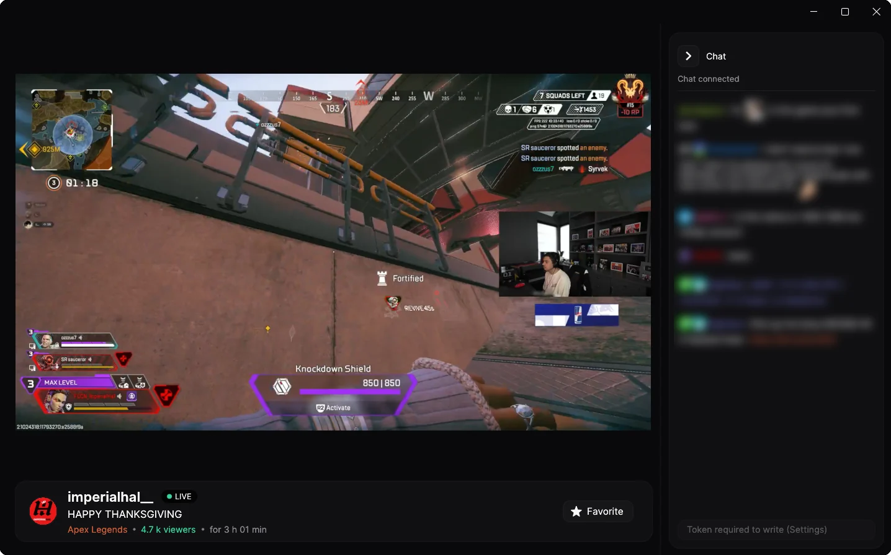
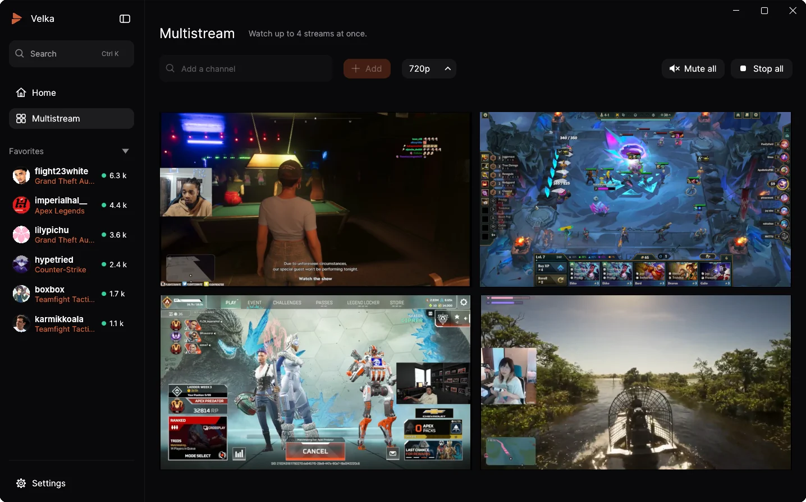

One window
Video and chat side by side, chat on the left or right, collapsible in one click.
Free and open source · Windows, macOS, Linux
Video and chat in a single window, multistream, a mini-player and notifications for your favorites. A real app, fast and unobtrusive.
No account needed, no added ads, no telemetry. Not affiliated with Twitch.

Video and chat side by side, chat on the left or right, collapsible in one click.
Up to 4 streams at once, with the sound of the one you pick.
The stream keeps playing in a small window, always on top if you want.
Twitch, 7TV, BTTV and FFZ emotes, badges, and chatting once signed in.
An alert when a favorite goes live. Your followed channels too, if you sign in.
Light and dark themes, accent color, shortcuts, accessibility, 25 languages.


Screenshots of random public channels; the chat is blurred.
On first launch, click “Install all”: Velka downloads Streamlink and libmpv from their official repositories, after checking their checksum.
Windows 10 or 11, 64-bit
Installer (.exe) Portable version“Windows protected your PC”: click More info, then Run anyway.
macOS 11 or later, Apple Silicon
Disk image (.dmg)Drag Velka to Applications. First launch: right-click Velka, then Open.
x86_64, X11 or Wayland
AppImageMake the file executable, then open it: chmod +x Velka-x86_64.AppImage
The source code is public, under the GPL-3.0 license. Every release is built by GitHub Actions, from the repository.
Yes, and it will stay free: it is free software. You can support the project if you wish, with nothing in return.
The files are not signed with a paid certificate. You can check their checksum against SHA256SUMS.txt before opening them.
No. Signing in is only used to chat and to list your followed channels.
No. Velka is an independent project, not affiliated with Twitch. “Twitch” is a trademark of Twitch Interactive, Inc.
Settings, Advanced and System, then “Uninstall”: the app and its data are removed.
Velka is free and ad-free. A donation, with nothing in return, helps keep it going.